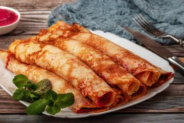

Pagina 3 - Receita de Panqueca com lista
Massa de Panqueca Simples

Ingredientes:
- 1 ovo
- 1 xícara de leite
- 1 colher(sopa) de óleo
- 1 xícara de farinha de trigo
- 1 pitada de sal
Utensílios:
- Liquidificador
- Pincel de Silicone
- Concha
- Frigideira Funda
- Prato Raso
Modo de preparo:
- Bata todos os ingredientes no liquidificador até obter uma consistência cremosa.
- Unte uma frigideira com óleo e despeje uma concha de massa.
- Faça movimentos circulares para que a massa se espalhe por toda a frigideira.
- Espere até a massa se soltar do fundo, vire e deixe fritar do outro lado.
- Acrescente o recheio de sua preferência, enrole e está pronta para servir.
Fonte:
https://www.tudogostoso.com.br/receita/113143-massa-de-panqueca-simples.html
Retorne ao menu